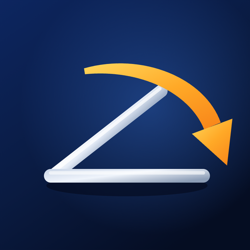

macOS menu bar utility
Move the lid.
Set the mood.
Your MacBook knows exactly how far its hinge is open — down to the degree. LidShift reads that angle and turns the last stretch of closing into something worth watching.
Lid angle
An illustration of the effects, drawn in your browser. The app renders your real desktop in Metal.
Seven effects, plus a quiet one
Closing the lid, as an event
Each effect arms when you open past the start angle and plays out as you close. Stop halfway and reverse — it follows you back up, and your sharp desktop returns.
Glass
A sheet of frosted glass closes over the desktop from the top. Refraction and blur concentrate around the rounded moving edge, and a top-heavy shadow advances with the closure — no black gap, ever. Refraction, blur, glass and darkening each have their own slider.
Shutter
A soft dark curtain descends from the top and covers the display as the lid comes down. At either end of the range it sits completely offscreen, so nothing lingers.
Paper
The desktop winds downward into one continuous 3D sheet, turn over turn around a horizontal axis. A matte, faintly fibrous reverse side catches warm light along the curl, while exposed side edges and a contact shadow give the roll its thickness. Above it the display goes black — live menu bar and Dock included.
Dust
An irregular diagonal front breaks the desktop into fine fragments — 144,000 of them on a jittered mesh. They soften into warm, neutral dust and drift up and to the right on shared, curling currents, in dense ribbons with sparse gaps, until only black is left. Reopen, and every grain finds its way back.
Burn
An irregular front burns inward from all four edges. A bright ember rim leads, a charcoal band trails behind it, and the ash fades to black as the lid comes down. Open again and the desktop un-burns, exactly as it was.
Freeze & Shatter
Translucent blue ice creeps over the desktop: cloudy frost, six-way crystal veins, a little refraction and moving highlights. Bright bevelled cracks open up, then the frozen picture breaks into shards that turn and fall away as the lid closes further.
CRT
The picture compresses vertically toward the centre, then fades out through a single cool line of light — the way a tube television used to let go of an image.
Dim only
The simple one. A black, mouse-transparent overlay over the built-in display, clear above 90° and 60% opaque at 20°. No screen capture and no permission prompt — and no change to your hardware brightness setting.
How it works
One sensor, one frame, sixty times a second
It reads the hinge, not a switch
macOS can tell you the lid is open or closed. The hinge itself knows the angle. LidShift polls that internal sensor about thirty times a second through public IOKit HID calls and shows whole degrees — no invented decimals.
One frame, held in memory
Cross the start angle on the way down and the app captures a single image of the built-in display, excluding its own windows and the cursor. One capture per close-and-open cycle. Nothing is recorded, saved or sent.
Metal does the rest
A display-paced draw loop runs at 60 FPS, or up to 120 with the optional ProMotion toggle, while a 45 ms filter smooths the motion between sensor samples. Once it settles, rendering pauses instead of spinning the GPU.
Set up in four steps
The first launch walks you through it: what LidShift does, a live check that your hinge sensor answers, why Screen Recording is needed — explained before macOS asks — and a real open-and-close test. Advanced → Getting Started… brings it back anytime.
Tuned to taste
Effect Settings holds the start angle from 60° to 120°, plus refraction, blur, glass and darkening for Glass. Changes apply immediately, even with the lid held still — and your effect, its settings and the Active switch are remembered across launches.
Out of the way
No Dock icon, no window to manage — one icon in the menu bar, and behind it a compact panel with the live angle, a single Active switch and your effect. The overlay is mouse-transparent, so the apps underneath keep running and stay clickable.
On your Mac, and nowhere else
A screen effect has no business phoning home
Every effect except Dim needs a picture of your desktop to transform. That picture is a single image in memory, and it never goes anywhere.
Screen Recording permission is only requested when you ask for it — in the first-run guide, which explains it first, or with the button in the menu. You can say “Not Now”, and Dim needs no permission at all.
- Nothing is written to disk. No recording, no screenshots saved, no cache of your desktop.
- No network, no analytics, no account. There is no server side, and no third-party dependency.
- App Sandbox and Hardened Runtime stay on. No helper tool, no privileged process, no input monitoring.
- The built-in display only. External monitors are never touched, and your brightness setting is left alone.
- The image is dropped on the way back. Reopening, switching effects, pausing or quitting releases it immediately.
Before you try it
What LidShift needs
- macOS
- 15.0 or newer
- Mac
- A MacBook whose hinge reports a lid angle. On a Mac without that sensor, LidShift says Unsupported / unavailable and keeps running.
- Permission
- Screen Recording for Glass, Shutter, Paper, Dust, Burn, Freeze & Shatter and CRT. Dim needs none.
- Display
- The built-in display. External monitors are unaffected.
- Footprint
- Menu bar only, no Dock icon, with optional Launch at Login.
- Build
- Xcode 26.6. Open
LidShift.xcodeproj, pick the LidShift scheme and My Mac, and Run. The Metal shader needs Xcode’s optional Metal Toolchain —xcodebuild -downloadComponent MetalToolchain— which is not an end-user dependency.
A proof of concept, honestly labelled
Apple publishes no documented API for the lid angle. LidShift calls only public IOKit HID functions — it links no private frameworks — but the sensor protocol they speak was never documented for third-party use. It can change between macOS releases and Mac models.
Your settings are saved, but the sensor underneath is still unofficial. Treat LidShift as a prototype worth playing with, not as App Store-ready software.
Give the last few degrees something to do
LidShift is a small, native, one-person project. Questions, a Mac model that works — or one that doesn’t — are all welcome.